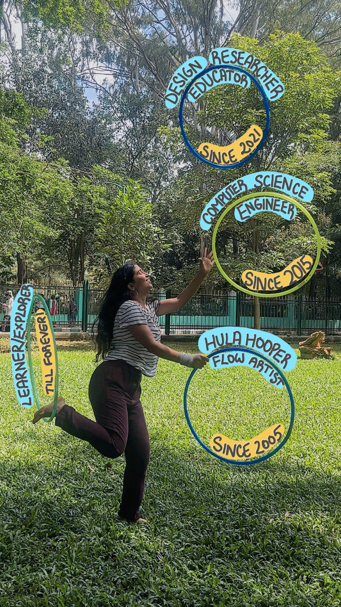

A shot from juggling in Cubbon Park. A hoop for each dimension of my professional background: hula hooper and flow artist since 2005, computer science engineer since 2015, design researcher and educator since 2021, and learner/explorer, till forever ∞
flow & fire artist design researcher maker CS engineer
Ever since I was 6 years old, my hoops have been spinning through the circle of life with me. And through it, I've been a part of a whole universe, filled with fun, joy and exploration with my mind and body. It's kind of like I discovered a portal to a parallel universe, but spinning it is the only way to enter it! So this site, and my creative practice Spinfinity is an attempt to share my adventures with the world.
I'm a flow and fire artist with a Master's in Human-Centered Design and a B.Tech in Computer Science. Through my creative practice, I bring together science and art, math and movement, design and data through flow arts like hula hoops and poi. I love crafting learning experiences through which folks can explore abstract ideas through the body — because the body is an incredibly powerful site for learning and exploration!
what I do with this
I've worked with over 500 students across government schools and neurodivergent learning spaces, helping them experience abstract ideas through the body. I run workshops where we explore angles, shapes, circle properties, and tangents — with hula hoops. For folks who are scared of math, it softens the fear. For mathematicians, it opens new ways into abstract areas like topology.
Math is often claimed to be about logic and reasoning, but most people's experience of it is deeply emotional. Being "bad at math" gets tangled up with intelligence, identity, self-worth. My practice is also a way to resist the binaries of mind/body and emotion/reason — ideas rooted in feminist theory.
Currently I'm a maker and lab manager at Paper Crane Lab, where I craft playful, hands-on learning experiences for all ages. And I'm always making something new — generative art, data viz, creative code experiments — which you can find in the projects section.
the hoop has taken me to
come think with me,
flow with me.
let's spin into infinite poi-ssibilities